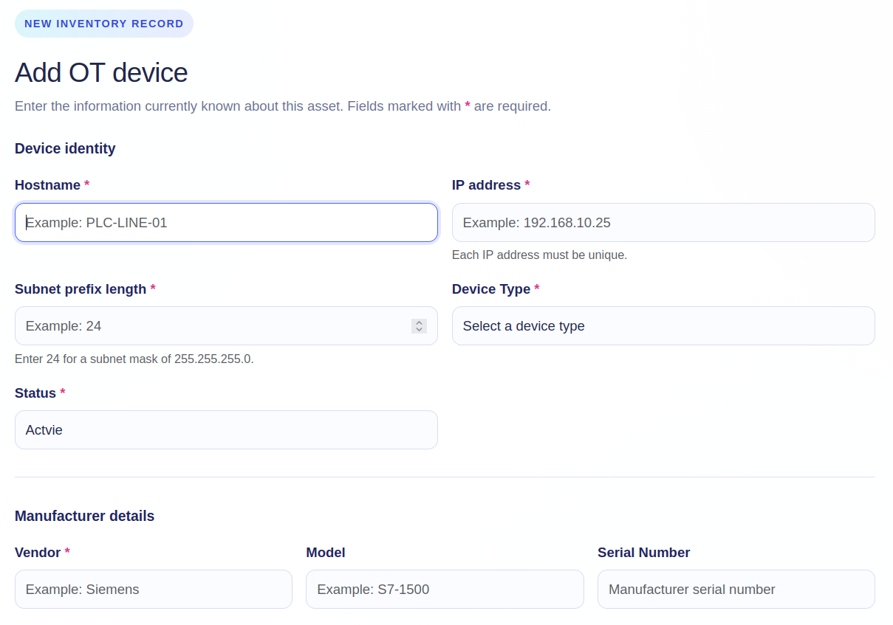
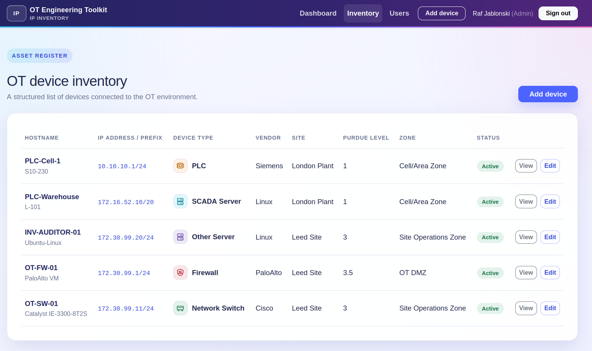
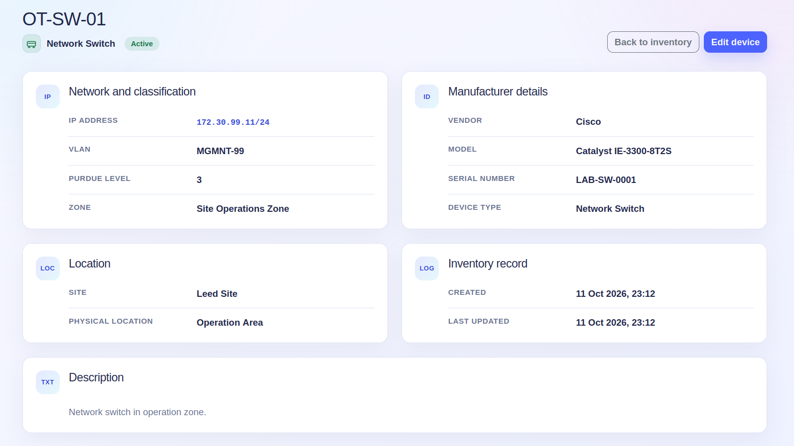
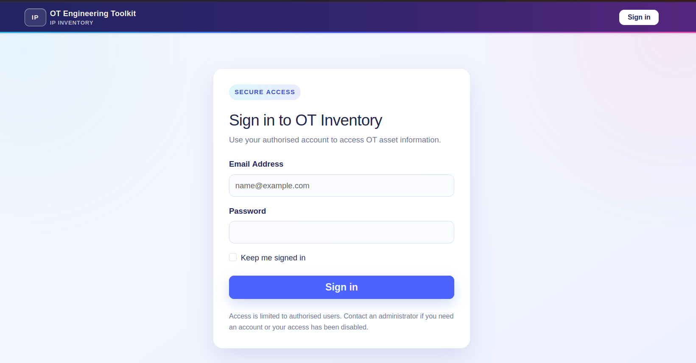
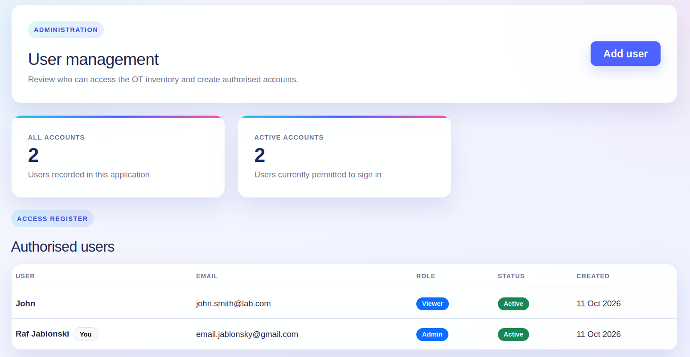
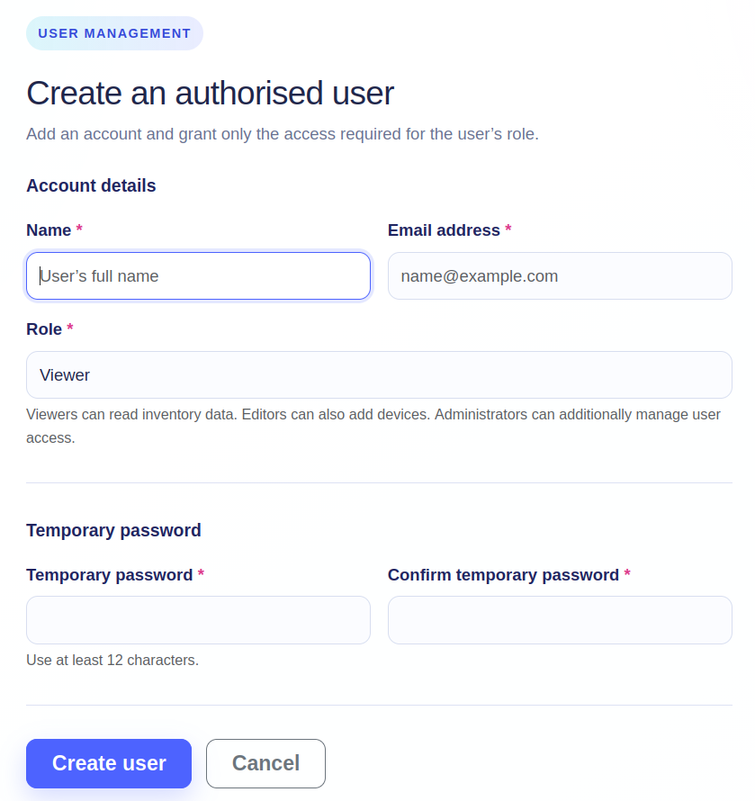

Project progress article
Turning a device list into a structured OT engineering record
I have started building a small OT network inventory application with Flask. The immediate goal is deliberately simple: understand the complete path from an HTML form to validation, a Python object, a database record, and a useful page for the engineer.
This is an educational application that I am rebuilding and extending step by step. Keeping the code clear is more important than adding complexity too early. The project gives me a practical way to strengthen my understanding of Flask while working on a subject directly connected to industrial networking and OT cybersecurity.
The engineering reason
Why asset inventory matters in an OT network
An organisation cannot protect, maintain, or recover equipment it does not know it has. This is especially important in OT, where network switches, firewalls, PLCs, HMIs, SCADA servers, historians, engineering workstations, and supporting infrastructure may remain in service for many years.
A useful OT inventory is more than a list of IP addresses. It should help an engineer answer practical questions:
- What is connected to the industrial network, and where is it located?
- Which vendor and model are in service, and how can the physical unit be identified?
- Which site, VLAN, Purdue level, and security zone does the asset belong to?
- Is the asset active, under maintenance, inactive, or decommissioned?
- Which systems may be affected by a vulnerability, failure, or proposed change?
This information supports vulnerability management, maintenance planning, segmentation reviews, incident response, lifecycle decisions, and recovery priorities. It also gives engineering and cybersecurity teams a shared reference instead of relying on disconnected spreadsheets, diagrams, and personal knowledge.
Inventory and taxonomy belong together
Recent joint guidance led by CISA describes an OT inventory as a regularly updated record and recommends supplementing it with a taxonomy that classifies assets by function and criticality. The Purdue level and zone fields in this learning project are an early step towards that richer operational context.
Current milestone
What the application can do today
The current version has moved beyond a static interface. It now provides a working database-backed workflow with authentication and role-aware actions.
Validated forms capture identity, addressing, manufacturer, location, classification, status, and notes.
A single table presents the key identity, network, site, Purdue, zone, and status fields.
Detail and edit views separate routine review from controlled record maintenance.
Authentication and viewer, editor, and administrator roles restrict sensitive actions.
The application uses an application factory, a Flask blueprint, SQLAlchemy models, Flask-Migrate database migrations, Flask-WTF forms, password hashing, login sessions, and Bootstrap templates. SQLite keeps the learning environment lightweight while the data model develops.
Following one asset through the application
The project has helped me understand that a new field must be connected through every layer. For example, adding the subnet prefix required a model column, a validated WTForms field, route handling, a migration, and an explicit Jinja output.
A value starts in the device form, is checked before submission, is handled by the appropriate Flask route, and is then stored in the database. The inventory and asset-detail pages deliberately select how that information is presented back to the engineer.
The current form accepts IPv4 addresses and prefix lengths from 0 to 32. IP addresses are unique, which prevents two inventory records from silently claiming the same address. Later versions can extend the design for IPv6 and introduce stronger rules for naming, sites, zones, and lifecycle data.

Application walkthrough
Keeping OT information readable
The interface follows the same Bootstrap-based design direction as my Engineering Change Request project. This is intentional: the two applications may eventually form part of a wider engineering toolkit, so their navigation, cards, forms, status labels, and page structure should feel consistent.


Adding authentication and role-based access
An inventory contains operationally useful information, so even a learning application should not treat every visitor as an administrator. The current version supports three straightforward roles:
Viewer
Can sign in, review the inventory, and open device details without add or edit controls.
Editor
Can review records and create or update OT assets as part of inventory maintenance.
Administrator
Can maintain assets and create authorised viewer, editor, or administrator accounts.
The interface hides unavailable actions, while the Flask routes also enforce the role requirement on the server. This distinction matters: hiding a button improves the user experience, but server-side authorisation provides the actual control.



Learning by rebuilding
What this stage has taught me
- A database model describes what Python expects, but migrations change the physical database structure.
- Forms should validate data before the route creates or updates an object.
- Template variable names must match the values passed by the route.
- Each database field must be deliberately presented in the user interface.
- Authorisation must be enforced at the route as well as reflected in the page.
- A useful OT record needs operational context, not only a hostname and IP address.
These are basic lessons, but they are exactly why I am keeping the application small and understandable. Repeating the full workflow is helping me build confidence with Flask rather than only copying a finished structure.
Future development
From a manual inventory to Netmiko-assisted validation
The next major direction is interaction with supported network assets through Netmiko. The inventory can become the source of connection targets, while a controlled collection process retrieves selected read-only facts from switches, routers, and firewalls.
A future service could compare declared inventory data with observed device data—for example hostname, platform, software version, interface state, and serial number—and record when the information was last checked. The first implementation will stay narrow, use approved read-only commands, and avoid storing credentials directly in an asset record.
Near-term
Improve account administration, tests, error handling, filtering, search, exports, and audit history.
Network interaction
Add read-only Netmiko collection, supported platform profiles, safe credential handling, and last-checked evidence.
Inventory quality
Detect differences between declared and observed facts without silently overwriting an engineer-approved record.
Wider toolkit
Explore connections with change control so that significant inventory changes can be reviewed and evidenced.
Active discovery in OT must be introduced carefully. Device capability, process sensitivity, approved commands, rate limits, maintenance windows, logging, and ownership all need to be understood before automation touches production equipment. The lab will therefore remain the proving ground for this feature.
Guidance informing the project
This learning project is not intended to replace a production-grade asset-management platform. Its design direction is informed by broader industry guidance on building and maintaining OT visibility:
Project status
A working foundation, built one understandable step at a time.
The source repository link will be added after the project is placed under version control and published.